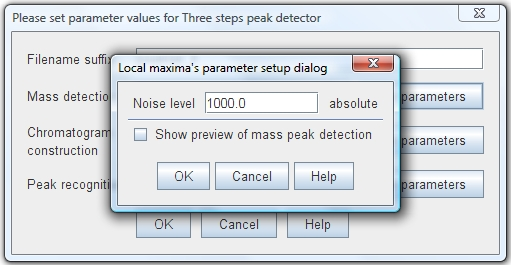
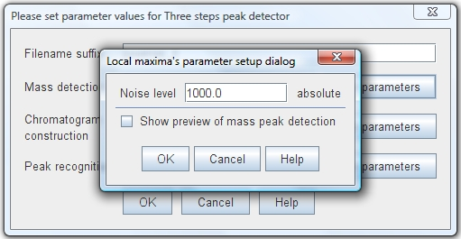

This mass detector search for all local maximum data points in the current spectrum and discard those that do not have the minimal height (intensity) defined by noise level parameter. The group of data points where the local maximum data point was found is used to form the mass spectrum peak.
This detector use a single parameter "noise level". This value sets the minimum intensity level for a each local maximum data point must have to be consider as part of a possible peak.
| Parameter setup dialog  |
|
Spectrum plot showing detected peaks
|